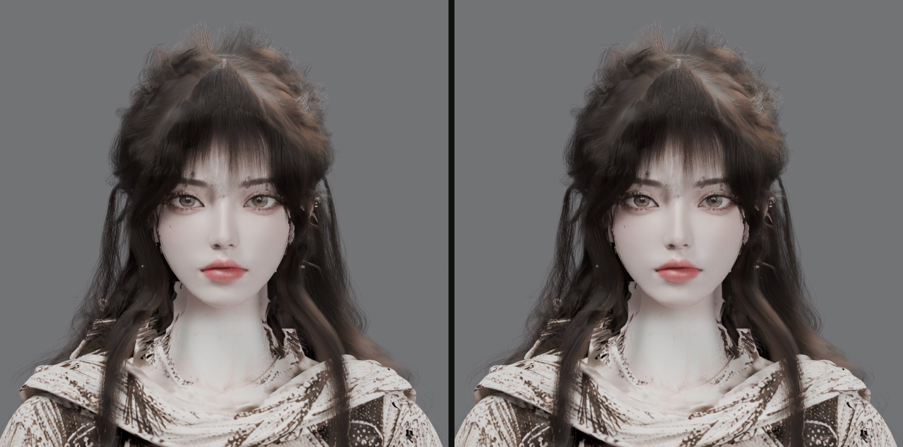
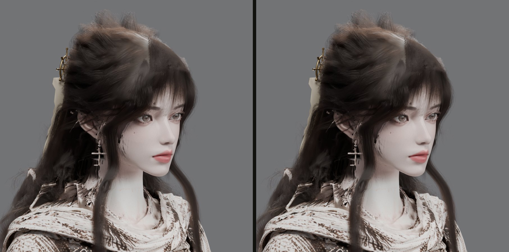
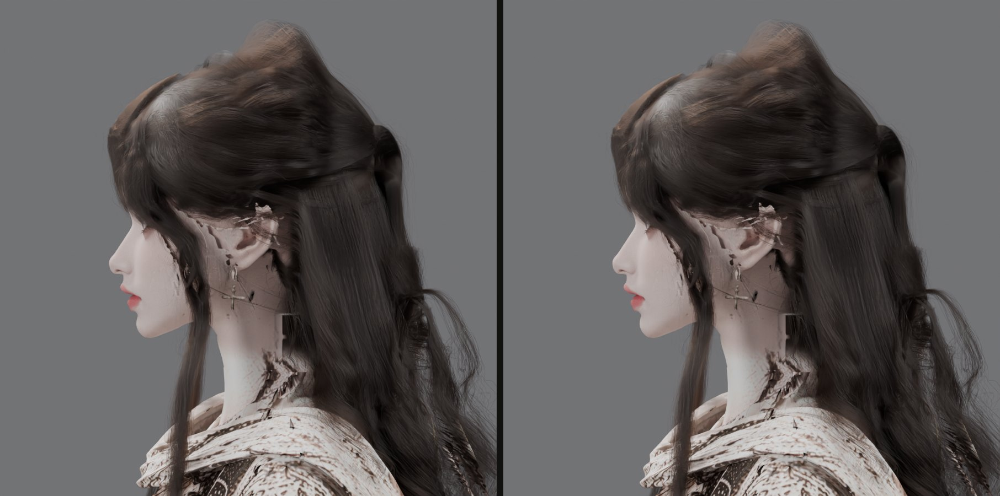
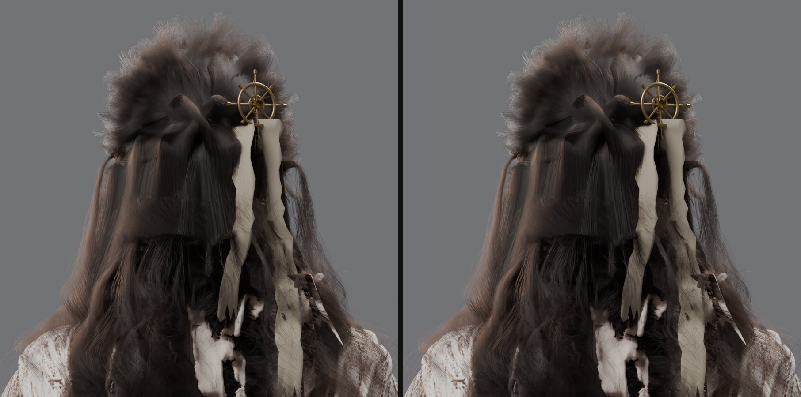
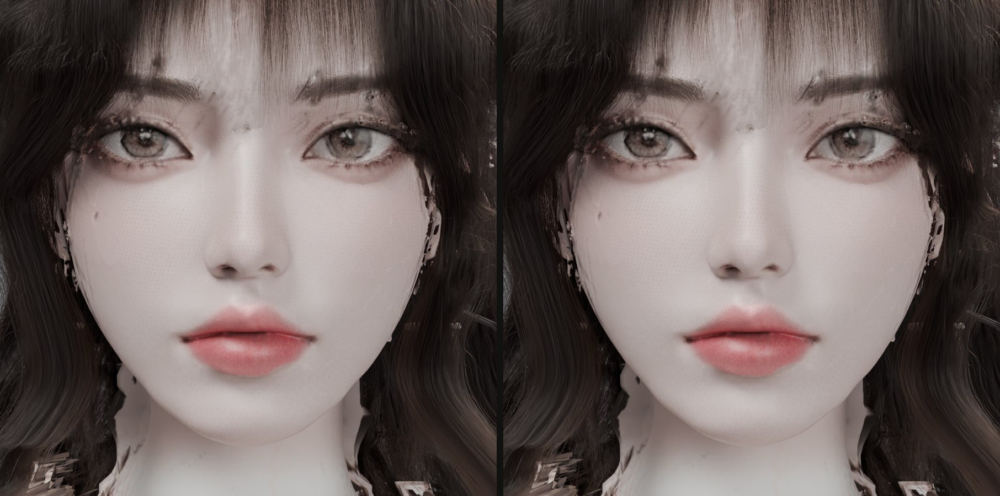
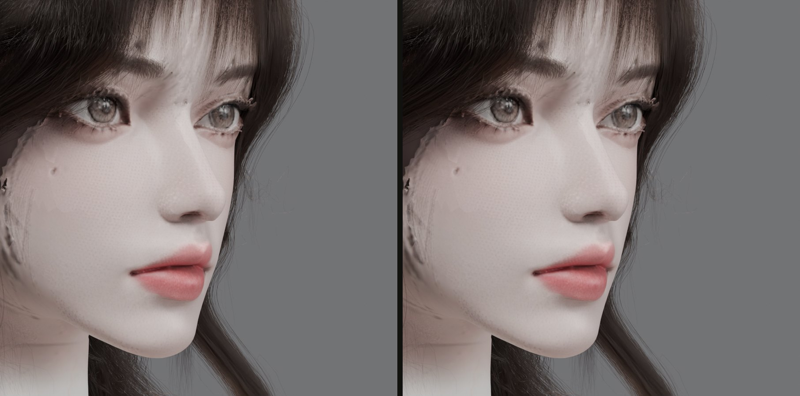
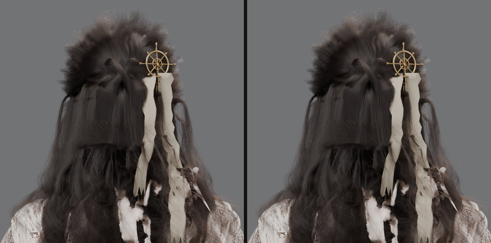
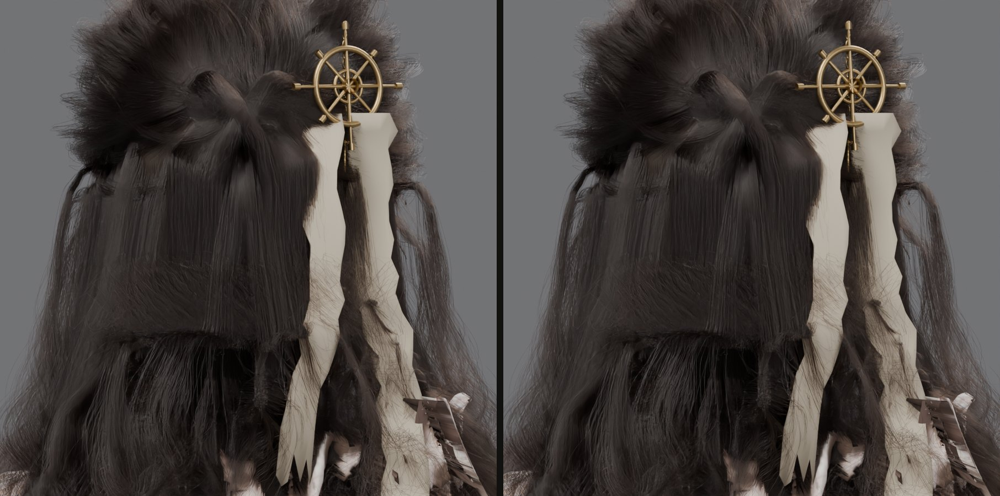
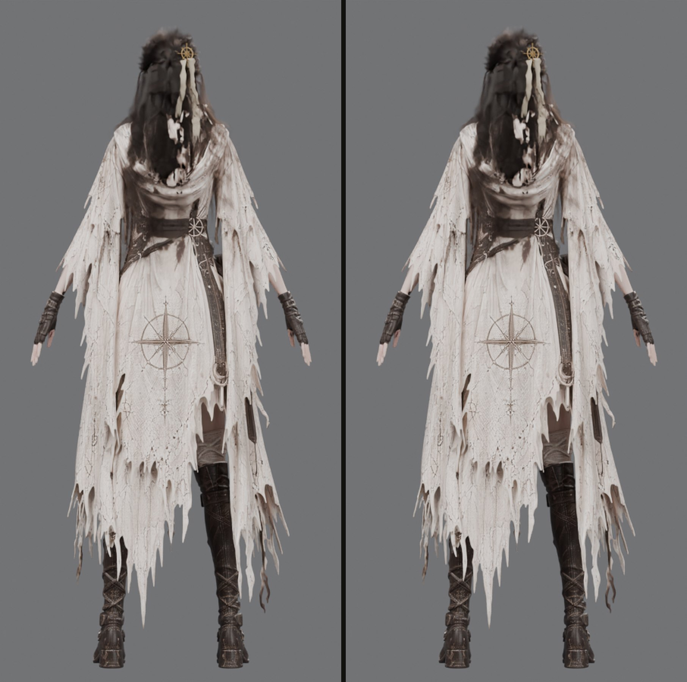

같은 파일·같은 스크립트·같은 인자·같은 램 규칙으로 ⑤(테크니컬 아트, Astra)와 ④(3D 아트, Opus 5.5)가 각각 9장을 렌더했습니다. 결과 이미지는 픽셀 단위로 거의 같고(Cycles의 실행마다 나는 잡음 수준), 차이는 실행 시간과 보고 방식입니다. 이 페이지를 보고 렌더 실행 담당을 정해 주세요.
실행 기록
항목
⑤ Astra
④ Opus 5.5
f 단계(6방향) 시간
99.1초
106.4초
g 단계(뒤 조명 3장) 시간
58.9초
62.2초
최고 램(작업/전용)
3444 / 3749 MB
3439 / 3748 MB
최저 여유 램
10.91 GB
10.41 GB
절차
인계 문서 9절 절차, 머리 해시 대조, 0.5초 램 감시, 단계별 즉시 보고
같은 절차 + 출력 폴더 분리를 위해 ⑤ 결과 폴더 이름을 잠시 바꿨다 복원(보고함)
결과
9장, 방향 일치, 정상 종료
9장, 방향 일치, 정상 종료. 파일 해시는 렌더 시각 메타데이터로 다르고 픽셀은 같은 그림
제안
—
재현성은 파일 해시가 아니라 픽셀로 비교하도록 인계 문서에 추가
결과 이미지 나란히 보기(왼쪽 ⑤ Astra · 오른쪽 ④ Opus 5.5)

t_front — 왼쪽 ⑤ Astra · 오른쪽 ④ Opus 5.5 · 픽셀 최대 차이 3/255 · 평균 0.0011

t_34front — 왼쪽 ⑤ Astra · 오른쪽 ④ Opus 5.5 · 픽셀 최대 차이 5/255 · 평균 0.0013

t_right — 왼쪽 ⑤ Astra · 오른쪽 ④ Opus 5.5 · 픽셀 최대 차이 3/255 · 평균 0.0007

t_back — 왼쪽 ⑤ Astra · 오른쪽 ④ Opus 5.5 · 픽셀 최대 차이 3/255 · 평균 0.0005

m_face_c0 — 왼쪽 ⑤ Astra · 오른쪽 ④ Opus 5.5 · 픽셀 최대 차이 3/255 · 평균 0.0014

m_face_c45 — 왼쪽 ⑤ Astra · 오른쪽 ④ Opus 5.5 · 픽셀 최대 차이 4/255 · 평균 0.0008

t_back (뒤 조명) — 왼쪽 ⑤ Astra · 오른쪽 ④ Opus 5.5 · 픽셀 최대 차이 3/255 · 평균 0.0008

hair_back_close (뒤 조명) — 왼쪽 ⑤ Astra · 오른쪽 ④ Opus 5.5 · 픽셀 최대 차이 1/255 · 평균 0.0003

full_back (뒤 조명) — 왼쪽 ⑤ Astra · 오른쪽 ④ Opus 5.5 · 픽셀 최대 차이 4/255 · 평균 0.0009